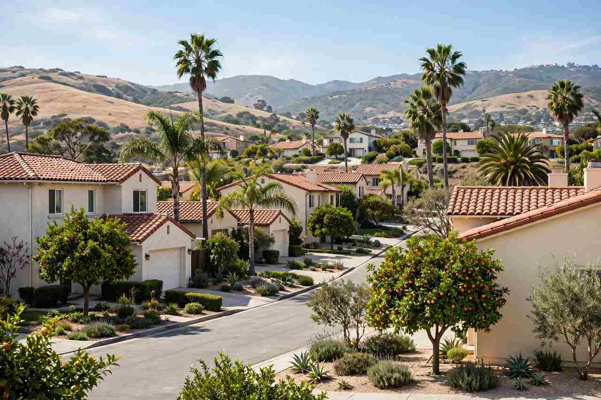

Rodent Control · Running Springs, CA
Same-Day Rodent Control in Running Springs, CA
Hearing scratching at night or finding droppings in Running Springs? Murvo is a rodent-only specialist offering same-day service from local crews. We identify the species, remove the infestation, clean up the mess, and exclude rodents for good. Pricing is flat-rate and quoted in writing, the work is guaranteed in writing, and coverage extends across San Bernardino County for homes and businesses alike. From Redlands, Big Bear Lake, Yucaipa to every corner of San Bernardino County, 1 ZIP codes are covered by local Murvo crews.
24/7Availability
1ZIP codes covered
Same-dayResponse
Licensed · Upfront options · Written guarantees · Fully insured
Running Springs at a glance
Local Rodent Control for Running Springs, CA.
San Bernardino County
Countysoutheast California
RegionSan Bernardino · 11 mi
Nearest metro388 miles southeast of Sacramento
From Sacramento1
ZIP codes covered Service by service in Running Springs
Rodent Control Services Available in Running Springs
The full range of residential and commercial rodent services in Running Springs and San Bernardino County - built around the species and housing here, from emergency removal and same-day control to exclusion, proofing, trapping, cleanup, and damage repair. Every service below is quoted flat-rate in writing and backed by our workmanship guarantee.
- 01Rodent Control↗
- 02Rodent Inspection↗
- 03Rodent Removal↗
- 04Rodent Exclusion↗
- 05Rodent Proofing↗
- 06Rat Control↗
- 07Mice Control↗
- 08Mouse Removal↗
- 09Rat Removal↗
- 10Rodent Trapping↗
- 11Rodent Baiting↗
- 12Rodenticide Application↗
- 13Attic Rodent Removal↗
- 14Crawl Space Rodent Removal↗
- 15Wall Rodent Removal↗
- 16Kitchen Rodent Control↗
- 17Garage Rodent Control↗
- 18Commercial Rodent Control↗
- 19Residential Rodent Control↗
- 20Emergency Rodent Removal↗
- 21Same-Day Rodent Control↗
- 22Rodent Damage Repair↗
- 23Rodent Waste Cleanup↗
- 24Rodent Disinfection↗
- 25Rodent Odor Removal↗
- 26Dead Rodent Removal↗
- 27Rodent Dropping Cleanup↗
- 28Rodent Exclusion for Roofs↗
- 29Rodent Exclusion for Vents↗
- 30Rodent Exclusion for Chimneys↗
Rodent Control in Running Springs
Rodent Control in Running Springs
What does a finished job actually look like? No new droppings, no nighttime movement, and no open route back inside. That is the standard Murvo works toward in Running Springs, with background-checked technicians, a written workmanship guarantee, and follow-up checks that confirm the quiet is real rather than temporary luck.
In Running Springs, rodent control is not a generic spray-and-go service. Rodents exploit rooflines, eaves and attic vents, crawlspace and raised-foundation gaps, and garage door seals in bungalows and ranch homes, Victorians and stucco row homes, hillside homes, and suburban homes near canyons and open space, and a fix that ignores those routes does not last. Murvo's Running Springs team inspects first, shows you the evidence - droppings, gnaw marks, entry gaps - and then lays out the work with a flat-rate written quote. We serve all of San Bernardino County from Running Springs, including Lake Arrowhead, Highland, and every job is covered by our written workmanship guarantee. Seasonal timing matters for rodent control in Running Springs: rodents surge in Running Springs from October through February.
Consider how a visit unfolds. The technician walks the exterior before touching anything indoors, noting gaps, rub marks, and food sources. Inside, attic and crawl-space evidence shapes the trapping plan, which is adjusted visit by visit as numbers change. Cleanup guidance covers contaminated areas safely, and exclusion work closes the route permanently. Throughout, photographs and written notes keep you informed, so progress is something you can see and verify rather than something you are asked to trust. Photographs taken at the start make those later comparisons honest, because memory alone tends to blur the details.
Getting started takes one conversation, day or night, because our lines stay open 24/7. Work proceeds only after your approval, in stages you can follow, and a final walkthrough reviews every seal and every monitoring result before sign-off. We book a window that suits your household, confirm access needs in advance, and arrive prepared. Questions after sign-off are welcome at any hour, and the same written record helps any technician pick up your case immediately.
Need help quickly in Running Springs? Call any time — the emergency line is staffed 24/7, and same-day rodent control appointments are available in most areas. We inspect first, explain the plan in plain language, and put the flat rate in writing before work starts. A Running Springs inspection confirms it on site - dropping size, gnaw marks, and entry points tell the story quickly.
Murvo does not quote rodent control sight unseen, because species, activity, and sealing needs change the work involved. After inspection you get one flat-rate written quote, and that is the figure you pay. As national context only, Angi's 2026 figures put rat and mouse removal and control at an average of $396, with a typical range of $189 to $655 — a benchmark, not a Murvo price.
Rodent Inspection in Running Springs
Rodent Inspection in Running Springs
In San Bernardino County, bungalows and ranch homes, Victorians and stucco row homes, hillside homes, and suburban homes near canyons and open space often hide entry gaps that stay invisible from ground level: lifted shingles, unsealed pipe penetrations, and garage door corners where Roof rat (Rattus rattus) and House mouse (Mus musculus) slip through. A Murvo rodent inspection covers the roofline, foundation, attic, and crawl space in one visit, so you learn exactly where rodents get in and what closing each gap involves.
When you need rodent inspection in Running Springs, the job starts with what is actually happening in your part of San Bernardino County. Murvo crews work Running Springs every week, so they know how Roof rat (Rattus rattus) and House mouse (Mus musculus) behave around bungalows and ranch homes, Victorians and stucco row homes, hillside homes, and suburban homes near canyons and open space here - and where they get in: rooflines, eaves and attic vents, crawlspace and raised-foundation gaps, and garage door seals. We arrive equipped for the full job, confirm the flat rate in writing before work begins, and cover the whole Running Springs area, including Lake Arrowhead, Highland. No call-center runaround and no open-ended hourly billing - just a local crew, a clear plan, and a written quote you approve first. Seasonal timing matters for rodent inspection in Running Springs: rodents surge in Running Springs from October through February.
Think of the inspection as three passes. The review pass brings it together: species, likely numbers, contamination, and the order in which fixes should happen. Each pass is photographed, and nothing is recommended without evidence from one of those passes to support it. The exterior pass checks siding, vents, pipe entries, and roof junctions for gaps and rub marks. The interior pass covers attic insulation, crawl-space corners, and kitchen voids for droppings, nests, and gnawing. The report separates what rodents are doing now from what the structure merely allows them to do later.
Your part is simple: point out noises, droppings, and any past problems. A background-checked technician arrives on time, protects access areas, and inspects inside and out against a set checklist. Before leaving, you walk through the evidence together, discuss priorities, and decide what happens next, with no obligation attached. Ours is everything else. If you decide to proceed, those findings become the working plan, so no second survey is needed before approved repairs begin.
You do not have to wait days for answers in Running Springs. Same-day rodent inspection appointments are available in most areas, urgent calls are taken 24/7, and most home inspections take under an hour. You finish the visit with photos, written findings, and flat-rate pricing for anything we recommend. In San Bernardino County, most cases involve the Roof rat (Rattus rattus) and the House mouse (Mus musculus), so the inspection focuses on their routes first.
Your exact rodent inspection price is confirmed before we visit, and any follow-up work is quoted as a flat rate in writing after the inspection — no hourly billing. For context, Angi's 2026 data puts a professional rodent inspection nationally at $100 to $200, often credited toward the job if you proceed.
Rodent Removal in Running Springs
Rodent Removal in Running Springs
Most Running Springs removal calls start after a homeowner has already tried a store-bought trap and caught nothing. The difference is placement and persistence. Murvo locates nests first, sets traps on confirmed routes for Roof rat (Rattus rattus) and House mouse (Mus musculus), returns until catches end, and quotes the whole program as one flat-rate written quote.
When you need rodent removal in Running Springs, the job starts with what is actually happening in your part of San Bernardino County. Murvo crews work Running Springs every week, so they know how Roof rat (Rattus rattus) and House mouse (Mus musculus) behave around bungalows and ranch homes, Victorians and stucco row homes, hillside homes, and suburban homes near canyons and open space here - and where they get in: rooflines, eaves and attic vents, crawlspace and raised-foundation gaps, and garage door seals. We arrive equipped for the full job, confirm the flat rate in writing before work begins, and cover the whole Running Springs area, including Lake Arrowhead, Highland. No call-center runaround and no open-ended hourly billing - just a local crew, a clear plan, and a written quote you approve first. Seasonal timing matters for rodent removal in Running Springs: rodents surge in Running Springs from October through February.
Removal starts with an assessment of species, numbers, and access routes across attics, wall voids, garages, and kitchens. Removal is followed immediately by entry-point exclusion, because new rodents will replace removed ones through any gap left open, and disinfection is arranged after heavy activity. Once you approve the written quote, technicians set traps along proven runways, check them on schedule, and remove animals promptly and hygienically. Catch records show progress clearly instead of relying on guesswork. Photos document each stage for you.
Same-day removal appointments are available across much of Running Springs for active infestations. Follow-up checks are booked before we leave, contaminated areas are made safe, and monitoring confirms the property is clear before we sign off. Every stage is explained in plain language as work proceeds. After a quick inspection, your background-checked technician explains the trapping plan and gives you a flat-rate written quote; work starts only with your approval. You keep copies of all visit records.
For active infestations in Running Springs, rodent removal can usually start the same day you call, and our team answers 24/7 when a rodent is loose in a living area. The first visit confirms activity and sets traps straight away; return visits then clear and reset them until monitoring shows the property is completely clear. Around Running Springs, bungalows and ranch homes, Victorians and stucco row homes, hillside homes, and suburban homes near canyons and open space give rodents the most cover, which is why entry points get checked before traps are set.
Cost depends on the species, how many animals are active, and how much sealing the home needs afterwards, so Murvo inspects first and quotes one flat rate in writing. For national context only, Angi's 2026 data averages rat and mouse removal at $396, typically $189 to $655. That benchmark is not a Murvo price; your written quote is the exact figure.
Rodent Exclusion in Running Springs
Rodent Exclusion in Running Springs
Exclusion is also the safest long-term strategy for Running Springs homes, because a sealed house needs far less bait and fewer repeat treatments. Murvo's licensed, insured crews finish roof, vent, and chimney work to weatherproof standards, walk every sealed opening with you afterwards, and back the result with a written workmanship guarantee you can hold us to.
In Running Springs, rodent exclusion is not a generic spray-and-go service. Rodents exploit rooflines, eaves and attic vents, crawlspace and raised-foundation gaps, and garage door seals in bungalows and ranch homes, Victorians and stucco row homes, hillside homes, and suburban homes near canyons and open space, and a fix that ignores those routes does not last. Murvo's Running Springs team inspects first, shows you the evidence - droppings, gnaw marks, entry gaps - and then lays out the work with a flat-rate written quote. We serve all of San Bernardino County from Running Springs, including Lake Arrowhead, Highland, and every job is covered by our written workmanship guarantee. Homes near Redlands tend to show activity first in Running Springs, which is why inspections start with rooflines, eaves and attic vents, crawlspace and raised-foundation gaps, and garage door seals.
Start with a hard rule: nothing gets sealed while animals remain inside. Technicians confirm the home is clear through trapping and monitoring, then survey the structure junction by junction, because seams between materials open as buildings settle. Each opening receives its own treatment, from packed copper mesh in irregular gaps to hardware cloth across vents and flashing at roof junctions. Door sweeps close the obvious routes, and smaller cracks receive durable sealant chosen for exterior exposure. A written inventory ties each photograph to a location, so future checks can revisit precisely the same points.
The visit starts with a check that no animals remain inside, using trapping and monitoring where needed. Before leaving, we show you each finished seal, explain how it was protected, and confirm the guarantee paperwork. A later re-check confirms the seals are holding and activity has stopped. Once clear, your background-checked crew seals the agreed openings with chew-resistant materials, working cleanly around your home. You approve the finished work before we close the job.
Rodent exclusion in Running Springs usually starts with a survey visit we can often schedule the same day you call. Sealing itself is booked as soon as any active animals are cleared, because nothing is sealed inside. Most homes are fully sealed within days, not weeks, and urgent entry points near wiring or food areas are prioritized first. That is also why Murvo pairs removal with exclusion in Running Springs - treating the animal without closing rooflines, eaves and attic vents, crawlspace and raised-foundation gaps, and garage door seals rarely lasts.
For national context, Angi's 2026 data puts basic exclusion at $200 to $600, depending on access and the number of openings. That is a benchmark, not a Murvo price. After surveying your Running Springs home, we list every opening that needs sealing and quote one flat rate in writing, so you pay for the work your property actually needs and nothing more.
Rodent Proofing in Running Springs
Rodent Proofing in Running Springs
In bungalows and ranch homes, Victorians and stucco row homes, hillside homes, and suburban homes near canyons and open space, prevention is a checklist hiding in plain sight: light under doors, unscreened vents, branches touching the roof, and clutter against walls near rooflines, eaves and attic vents, crawlspace and raised-foundation gaps, and garage door seals. Murvo works through that checklist across San Bernardino County properties, separating simple homeowner fixes from specialist sealing, so money goes only where professional materials genuinely help.
When you need rodent proofing in Running Springs, the job starts with what is actually happening in your part of San Bernardino County. Murvo crews work Running Springs every week, so they know how Roof rat (Rattus rattus) and House mouse (Mus musculus) behave around bungalows and ranch homes, Victorians and stucco row homes, hillside homes, and suburban homes near canyons and open space here - and where they get in: rooflines, eaves and attic vents, crawlspace and raised-foundation gaps, and garage door seals. We arrive equipped for the full job, confirm the flat rate in writing before work begins, and cover the whole Running Springs area, including Lake Arrowhead, Highland. No call-center runaround and no open-ended hourly billing - just a local crew, a clear plan, and a written quote you approve first. In Running Springs, rodent proofing calls most often involve bungalows and ranch homes, Victorians and stucco row homes, hillside homes, and suburban homes near canyons and open space, where rooflines, eaves and attic vents, crawlspace and raised-foundation gaps, and garage door seals decide whether the fix holds.
Proofing divides naturally into structure, surroundings, and habits. Habits means securing pet food, bird seed, and stored produce so the property stops advertising itself. Structure means sealing utility entries, screening vents and chimneys, and fitting sweeps where doors leak light. Surroundings means trimming branches back from the roofline, moving clutter and timber away from walls, and reducing sheltered harborage. Technicians assess all three layers in one survey and rank the combined findings by impact, not by what is easiest to sell.
On proofing day, expect one tidy visit for most homes. Agreed sealing and screening are completed, sweeps are fitted, and attractant advice is tailored to your garage, kitchen, and yard. Before leaving, you walk the finished work together, confirm the guarantee in writing, and book the seasonal re-check that keeps the protection current year after year. The re-check is not a formality, because it catches shifted sweeps, damaged screens, and new gaps before rodents discover them first.
Rodent proofing is preventive, so there is rarely a rush, but surveys in Running Springs can often be arranged the same day you call, and always within a few days. Most proofing work is completed in a single visit once you approve the plan, and booking before colder weather gives your home protection ahead of the seasonal rush indoors. In San Bernardino County, activity follows the local season, so timing the work matters as much as the method.
We survey your Running Springs property first, separate the quick wins you can handle yourself from the specialist sealing, and quote the professional work as one flat rate in writing so spending can be staged. Angi's 2026 national context puts exclusion, the core of proofing, at $200 to $600 for basic work — a benchmark only, not a Murvo price.
Rat Control in Running Springs
Rat Control in Running Springs
Rat problems escalate quietly across San Bernardino County: gnawed wiring, contaminated insulation, and droppings spreading through storage areas before anyone sees an animal. Murvo answers with same-day appointments where available and a 24/7 line for urgent cases. Every visit is documented, trapped rats are removed hygienically, and the program finishes with exclusion so the next group cannot simply move in.
When you need rat control in Running Springs, the job starts with what is actually happening in your part of San Bernardino County. Murvo crews work Running Springs every week, so they know how Roof rat (Rattus rattus) and House mouse (Mus musculus) behave around bungalows and ranch homes, Victorians and stucco row homes, hillside homes, and suburban homes near canyons and open space here - and where they get in: rooflines, eaves and attic vents, crawlspace and raised-foundation gaps, and garage door seals. We arrive equipped for the full job, confirm the flat rate in writing before work begins, and cover the whole Running Springs area, including Lake Arrowhead, Highland. No call-center runaround and no open-ended hourly billing - just a local crew, a clear plan, and a written quote you approve first. Homes near Redlands tend to show activity first in Running Springs, which is why inspections start with rooflines, eaves and attic vents, crawlspace and raised-foundation gaps, and garage door seals.
We prioritize trapping and exclusion within an integrated program and offer no-poison options where suitable. Monitoring devices then confirm the routes have gone quiet before we close the program. Where a site genuinely needs bait, it is placed only in tamper-resistant, locked stations positioned away from pets and food areas, and monitored on schedule. Droppings areas are cleaned safely, never dry-swept, because disturbing dry droppings can spread contamination; surfaces are disinfected first, following CDC guidance. Every station is labeled, mapped, and recorded.
Call and describe where signs are strongest; that directs the first inspection. Your technician maps routes and harborage, explains the pre-baiting plan honestly, including why results build over days, and provides the written quote. Approval starts the program the same visit, with follow-up checks booked ahead so momentum never depends on you calling back. You will know after each visit what was caught, where placements changed, and what the next check is specifically looking for.
Rats do not wait, and neither do we: rat control in Running Springs can usually start with a same-day inspection, and urgent calls are answered 24/7. Pre-baiting begins on the first visit once you approve the written quote, traps are set as soon as rats are feeding confidently, and scheduled checks keep the program moving until activity stops. A Running Springs inspection confirms it on site - dropping size, gnaw marks, and entry points tell the story quickly.
Rat work varies with species, colony size, and how many entry points need sealing, so Murvo inspects first and quotes one flat rate in writing. For national context only, Angi's 2026 data averages rat control and removal at $396, typically $189 to $655. That benchmark is not a Murvo price; the written quote for your Running Springs home is the exact figure you pay.
Mice Control in Running Springs
Mice Control in Running Springs
One mouse seen in a Running Springs kitchen usually means more are nesting unseen, and mice breed quickly enough that a small problem becomes a large one within weeks. Murvo offers same-day appointments where available, builds the program around trapping and sealing rather than baits, and backs the finished work with a written workmanship guarantee for lasting peace of mind.
When you need mice control in Running Springs, the job starts with what is actually happening in your part of San Bernardino County. Murvo crews work Running Springs every week, so they know how Roof rat (Rattus rattus) and House mouse (Mus musculus) behave around bungalows and ranch homes, Victorians and stucco row homes, hillside homes, and suburban homes near canyons and open space here - and where they get in: rooflines, eaves and attic vents, crawlspace and raised-foundation gaps, and garage door seals. We arrive equipped for the full job, confirm the flat rate in writing before work begins, and cover the whole Running Springs area, including Lake Arrowhead, Highland. No call-center runaround and no open-ended hourly billing - just a local crew, a clear plan, and a written quote you approve first. In Running Springs, mice control calls most often involve bungalows and ranch homes, Victorians and stucco row homes, hillside homes, and suburban homes near canyons and open space, where rooflines, eaves and attic vents, crawlspace and raised-foundation gaps, and garage door seals decide whether the fix holds.
Our integrated approach favors trapping and sealing over baits, with genuinely pet-safe options for family homes. Food-storage advice removes the attraction that drew mice in, and sealing is completed as whole-home proofing so kitchens, attics, and voids stay clear after the program ends. Droppings in cabinets are never dry-swept; following CDC guidance, surfaces are disinfected first so contamination is not spread into the air, and nesting debris is bagged and removed. Catch records show exactly how numbers fall each visit.
Book mice control in Running Springs with one call, and same-day visits are available in many areas. Trap checks are scheduled before we leave, and a follow-up visit confirms activity has stopped before the job is signed off. Your technician surveys the kitchen, attic, and voids, explains where mice are traveling, and gives you a flat-rate written quote before setting a single trap. Everything is explained in plain language for your household.
Mice multiply fast, so mice control in Running Springs is built to start fast too: a survey can often be arranged the same day you call, with traps set on that first visit once the quote is approved. Because mice investigate new objects quickly, catches usually begin soon after, and check visits follow until a final confirmation shows activity has stopped. That is also why Murvo pairs removal with exclusion in Running Springs - treating the animal without closing rooflines, eaves and attic vents, crawlspace and raised-foundation gaps, and garage door seals rarely lasts.
The number of rooms affected and the amount of sealing required set the price, so Murvo surveys first and quotes one flat rate in writing. For national context only, Angi's 2026 data averages rat and mouse control and removal at $396, typically $189 to $655 — not a Murvo price; your written quote is exact.
Mouse Removal in Running Springs
Mouse Removal in Running Springs
What does proper removal include beyond the traps themselves? Hygienic clearing of droppings and nesting, disinfection of affected cabinets, and sealing that stops the next mice using the same scent trails. Murvo delivers that complete finish with licensed, insured technicians and a written workmanship guarantee on the completed work.
In Running Springs, mouse removal is not a generic spray-and-go service. Rodents exploit rooflines, eaves and attic vents, crawlspace and raised-foundation gaps, and garage door seals in bungalows and ranch homes, Victorians and stucco row homes, hillside homes, and suburban homes near canyons and open space, and a fix that ignores those routes does not last. Murvo's Running Springs team inspects first, shows you the evidence - droppings, gnaw marks, entry gaps - and then lays out the work with a flat-rate written quote. We serve all of San Bernardino County from Running Springs, including Lake Arrowhead, Highland, and every job is covered by our written workmanship guarantee. Around Redlands, Big Bear Lake, Yucaipa, the pattern is similar: House mouse (Mus musculus) finds rooflines, eaves and attic vents, crawlspace and raised-foundation gaps, and garage door seals first, and lasting mouse removal has to close those routes.
Trap-based removal is the default here for practical reasons. Once activity ends, access points are sealed thoroughly, and advice on storage and scent-trail cleaning helps the kitchen stay clear. It is safer around children and pets, results are visible and countable, and no animal is left to die inside a hidden void. Cleanup follows the same care: droppings and nesting are never dry-swept, surfaces are disinfected first, and waste is bagged and removed hygienically. Monitoring after sealing confirms the finish, so the result rests on evidence rather than a hopeful guess.
For urgent mouse problems in Running Springs, contact Murvo for a same-day response where available. The final visit confirms the result and your written workmanship guarantee. Your technician surveys the home, explains the multi-trap plan, and confirms a flat-rate written quote before starting. Return visits are scheduled to clear and reset traps, and cleanup and sealing follow once catches reach zero. You are updated after every visit, without ever chasing us.
For mice active in kitchens or living areas of your Running Springs home, mouse removal can often begin the same day you call. That first visit surveys nesting sites and sets traps as soon as you approve the quote, and because mice investigate traps quickly, catches usually start fast. Return visits continue until numbers reach zero. Around Running Springs, bungalows and ranch homes, Victorians and stucco row homes, hillside homes, and suburban homes near canyons and open space give rodents the most cover, which is why entry points get checked before traps are set.
Mouse removal cost reflects the number of rooms involved and how much sealing is needed, which is why Murvo surveys first and quotes a flat rate in writing. For national context only, Angi's 2026 data averages rat and mouse removal at $396, typically $189 to $655. That benchmark is not a Murvo price; your written quote covers your exact program.
Rat Removal in Running Springs
Rat Removal in Running Springs
If rats are active in your Running Springs home right now, Murvo offers a same-day response and a clear written plan, with lines open 24/7 for urgent cases. Removal is delivered as one coordinated job: trapping, hygienic disposal, prevention, and a final walkthrough with monitoring evidence, so you are never asked to simply take our word that activity ended.
Homeowners in Running Springs call Murvo for rat removal because the problem here is specific: Roof rat (Rattus rattus) pressure around bungalows and ranch homes, Victorians and stucco row homes, hillside homes, and suburban homes near canyons and open space, tight access at rooflines, eaves and attic vents, crawlspace and raised-foundation gaps, and garage door seals, and activity that follows the local season. Our San Bernardino County crews diagnose the real source before recommending work, explain the options in plain language, and quote one flat rate in writing. Across Running Springs - including Lake Arrowhead, Highland - every visit is backed by licensed, insured technicians and our written workmanship guarantee. The Running Springs crews who handle rat removal also handle the follow-through - proofing, cleanup, and monitoring - so one visit can close the whole problem.
Removal begins by establishing species and the scale of the problem, because a single transient rat and an attic colony need very different programs. Technicians pre-bait unset traps on confirmed runways so cautious rats feed without fear, then set them, returning frequently to remove animals hygienically and adjust placements as activity shifts. Attic colonies may need dedicated attic work, while a carcass in a void calls for retrieval and odor treatment. Sealing follows once the property is clear. Nothing is rushed at this stage.
Book rat removal in Running Springs and we will agree a visit time, with same-day appointments available for active infestations. Repeat visits are scheduled ahead to remove animals and adjust traps. At the end, monitoring and a walkthrough confirm clearance, backed by our written workmanship guarantee. Your technician assesses species and colony size, explains the program, and confirms a flat-rate written quote before trapping starts. You see documented evidence of the result.
In Running Springs, rat removal can usually start the same day you call, with 24/7 answering for rats active in living areas. Pre-baiting begins on the first visit after you approve the written quote, and traps are set once rats feed confidently, typically within days. Repeat visits then run frequently until monitoring confirms the colony is gone. If you are seeing signs now, an inspection this week is the fastest way to know which situation you are in.
Colony size, access, and the sealing needed afterwards drive the price, so Murvo assesses the property first and quotes a flat rate in writing covering the full program. Angi's 2026 data, for national context only, averages rat removal at $396 and typically ranges from $189 to $655; that is a benchmark, not a Murvo price.
Rodent Trapping in Running Springs
Rodent Trapping in Running Springs
Most Running Springs trapping programs succeed or fail on placement, not equipment. Murvo maps runways from droppings and rub marks first, then positions traps perpendicular to walls and along beams and pipes where rodents genuinely travel. You approve one flat-rate written quote covering the program and its check visits.
Homeowners in Running Springs call Murvo for rodent trapping because the problem here is specific: Roof rat (Rattus rattus) pressure around bungalows and ranch homes, Victorians and stucco row homes, hillside homes, and suburban homes near canyons and open space, tight access at rooflines, eaves and attic vents, crawlspace and raised-foundation gaps, and garage door seals, and activity that follows the local season. Our San Bernardino County crews diagnose the real source before recommending work, explain the options in plain language, and quote one flat rate in writing. Across Running Springs - including Lake Arrowhead, Highland - every visit is backed by licensed, insured technicians and our written workmanship guarantee. Homes near Redlands tend to show activity first in Running Springs, which is why inspections start with rooflines, eaves and attic vents, crawlspace and raised-foundation gaps, and garage door seals.
A program opens with mapping, not trap placement. Technicians read droppings, rub marks, and gnaw damage to reconstruct nightly routes through attics, basements, and kitchens. Devices are then selected for each location: snap traps for decisive results, multi-catch units on busy mouse routes, live-capture where release is preferred. For rats, pre-baiting runs several days before traps are set, the step most amateur attempts skip. Every device is numbered, recorded, and revisited on a fixed schedule. The map also prevents a common mistake: removing a device that looks empty while its route is still active.
Between checks, leave devices untouched and note any new noises or droppings by room; that information sharpens the next visit. The program ends with a clear monitoring result, a written summary of what was caught where, and sealing advice. Your background-checked technician adjusts placements as the pattern changes and removes catches promptly and hygienically. The summary also notes which routes stayed busiest, information that makes any later exclusion work faster and more precisely targeted.
In Running Springs, a rodent trapping program can usually start the same day you call, with traps placed or pre-baiting begun on the first visit after you approve the quote. Mice often investigate within the first night, while wary rats need a few days of pre-baiting before traps are set. Scheduled checks then keep the program moving until numbers reach zero. Murvo's Running Springs crews explain the finding either way, and the flat-rate quote leaves the decision with you.
Rather than charging by the trap or by the visit, Murvo inspects first and quotes rodent trapping as one flat rate in writing for the complete program, including its check visits. Price depends on species, activity level, and how many checks are needed, and there is no hourly billing at any stage, so there are no per-visit surprises.
Rodent Baiting in Running Springs
Rodent Baiting in Running Springs
In bungalows and ranch homes, Victorians and stucco row homes, hillside homes, and suburban homes near canyons and open space, bait has a narrow, specific job: reducing outdoor pressure while sealing removes the indoor route through rooflines, eaves and attic vents, crawlspace and raised-foundation gaps, and garage door seals. Our technicians in San Bernardino County place secured stations along runways away from play areas, label and photograph each one, and check consumption on schedule until activity ends and stations come out.
Homeowners in Running Springs call Murvo for rodent baiting because the problem here is specific: Roof rat (Rattus rattus) pressure around bungalows and ranch homes, Victorians and stucco row homes, hillside homes, and suburban homes near canyons and open space, tight access at rooflines, eaves and attic vents, crawlspace and raised-foundation gaps, and garage door seals, and activity that follows the local season. Our San Bernardino County crews diagnose the real source before recommending work, explain the options in plain language, and quote one flat rate in writing. Across Running Springs - including Lake Arrowhead, Highland - every visit is backed by licensed, insured technicians and our written workmanship guarantee. In Running Springs, rodent baiting calls most often involve bungalows and ranch homes, Victorians and stucco row homes, hillside homes, and suburban homes near canyons and open space, where rooflines, eaves and attic vents, crawlspace and raised-foundation gaps, and garage door seals decide whether the fix holds.
Placement discipline protects the household. Stations stay away from pet play areas, food storage, and anywhere children gather, and every location is agreed with you before installation. If a property cannot be baited safely, technicians say so and rely on trapping and proofing instead. Records from each visit show consumption trends honestly, including when activity has moved rather than fallen, so decisions about continuing, relocating, or removing stations rest on evidence you can inspect yourself. You receive copies of those records, so the reasoning behind every placement decision is open to inspection.
Booking rodent baiting in Running Springs starts with an inspection, not a station. Your technician maps activity, reviews pet, child, and wildlife concerns with you, and confirms a flat-rate written quote before anything is placed. Approved stations are installed locked and labeled the same visit, with locations photographed for you. Monitoring visits are scheduled before we leave, and stations come out once activity is confirmed clear. Your written guarantee covers the full program.
Deliberate setup matters more than speed with rodent baiting, but the first step is still fast: an inspection in Running Springs can often be arranged the same day you call. Stations are placed only after activity is mapped and you approve the written quote and each location, then monitoring runs on a fixed schedule until consumption stops and activity is confirmed clear. In San Bernardino County, activity follows the local season, so timing the work matters as much as the method.
How many locked stations your property needs and how long monitoring runs determine the cost, so Murvo inspects and maps activity first, then quotes one flat rate in writing covering placement and scheduled checks. There are no per-visit surprises, and because the approach is exclusion-first, the aim is to reduce and eventually remove stations rather than maintain them forever.
Rodenticide Application in Running Springs
Rodenticide Application in Running Springs
Regulation shapes product choice in California: California restricts anticoagulant rodenticides, other states impose their own limits, and Murvo complies with every applicable rule. You receive copies of product labels and safety information for anything applied at your Running Springs property, and we talk through children, pets, livestock, and wildlife concerns before any flat-rate written quote is agreed.
Homeowners in Running Springs call Murvo for rodenticide application because the problem here is specific: Roof rat (Rattus rattus) pressure around bungalows and ranch homes, Victorians and stucco row homes, hillside homes, and suburban homes near canyons and open space, tight access at rooflines, eaves and attic vents, crawlspace and raised-foundation gaps, and garage door seals, and activity that follows the local season. Our San Bernardino County crews diagnose the real source before recommending work, explain the options in plain language, and quote one flat rate in writing. Across Running Springs - including Lake Arrowhead, Highland - every visit is backed by licensed, insured technicians and our written workmanship guarantee. Coverage for rodenticide application spans 1 ZIP codes in San Bernardino County, including 92382.
The first decision is whether application is justified, and often it is not. Where treatment is justified, stations are mapped, anchored, and labeled, products remain inside locked units at all times, and scheduled checks record amounts precisely. Monitoring data then governs whether treatment continues, changes, or stops in favor of proofing alone. Inspection confirms species and activity, then trapping and exclusion are weighed honestly; if those methods can solve the problem safely, they are recommended instead. If consumption patterns look unusual, technicians investigate rather than simply refilling, because unexpected patterns can signal a different species.
Booking rodenticide application in Running Springs starts with an inspection visit, often available the same day. Your licensed technician confirms whether treatment is justified, explains safer alternatives first, and gives you a flat-rate written quote before anything is applied. If you proceed, stations are installed locked and labeled, monitoring visits are scheduled, and treatment continues only while monitoring data supports it, under our written workmanship guarantee. You can stop the program at any point.
In Running Springs, rodenticide application begins with an inspection we can often schedule the same day you call, because no responsible application happens without one. If treatment is justified and you approve the written quote, locked stations are installed on that visit. Monitoring then runs on schedule, and treatment stops as soon as data shows activity has ended. In San Bernardino County, most cases involve the Roof rat (Rattus rattus) and the House mouse (Mus musculus), so the inspection focuses on their routes first.
Station numbers, the product permitted under California rules, and the length of monitoring all shape the price. Murvo inspects first, explains whether trapping or exclusion could avoid chemical control entirely, and then quotes one flat rate in writing before work begins. That quote covers scheduled monitoring visits, so there are no per-visit surprises later.
Attic Rodent Removal in Running Springs
Attic Rodent Removal in Running Springs
Most Running Springs attic jobs start with nighttime scratching that grows bolder over a week. Murvo inspects the attic, roof, and eaves together, identifies whether Roof rat (Rattus rattus) or House mouse (Mus musculus) is overhead, traps up there, and seals the roofline afterwards. One flat-rate written quote is agreed before removal begins.
In Running Springs, attic rodent removal is not a generic spray-and-go service. Rodents exploit rooflines, eaves and attic vents, crawlspace and raised-foundation gaps, and garage door seals in bungalows and ranch homes, Victorians and stucco row homes, hillside homes, and suburban homes near canyons and open space, and a fix that ignores those routes does not last. Murvo's Running Springs team inspects first, shows you the evidence - droppings, gnaw marks, entry gaps - and then lays out the work with a flat-rate written quote. We serve all of San Bernardino County from Running Springs, including Lake Arrowhead, Highland, and every job is covered by our written workmanship guarantee. Coverage for attic rodent removal spans 1 ZIP codes in San Bernardino County, including 92382.
Cleanup overhead demands care. Contaminated insulation is assessed honestly, with repair referrals where replacement is warranted. Poison is avoided in attics deliberately, since animals dying in inaccessible corners create odor and retrieval problems. Adjoining crawl spaces are checked before the job is signed off as complete. Droppings and nesting material are never dry-swept, because that can spread contamination into the air; surfaces are disinfected first, then waste is removed hygienically by technicians in protective equipment. The result is a documented attic: cleared, sealed, cleaned where needed, and verified quiet before closure.
Book an attic visit, same-day where wiring damage or heavy activity makes it urgent. Your technician inspects overhead and along the roofline, shows you photographs of the evidence, and confirms the written quote. Trapping starts after approval, follow-up checks are booked ahead, and sealing plus cleanup complete the sequence before monitoring confirms the result. Wiring or insulation concerns are flagged separately in writing, so you can arrange any specialist repairs with clear information in hand.
Overhead scratching in Running Springs often gets a same-day attic rodent removal visit, and attics with chewed wiring are prioritized because of the fire risk. Trapping starts on the first visit once you approve the written quote, checks run on schedule, and most attics are cleared and sealed within days. Monitoring stays in place briefly afterwards to confirm nothing remains inside. In San Bernardino County, most cases involve the Roof rat (Rattus rattus) and the House mouse (Mus musculus), so the inspection focuses on their routes first.
Activity levels, roofline sealing, and whether contaminated insulation needs cleanup all affect attic pricing, so Murvo inspects first and quotes one flat rate in writing for the removal program. Cleanup options are priced separately in writing before you decide, so nothing is added once work is underway.
Crawl Space Rodent Removal in Running Springs
Crawl Space Rodent Removal in Running Springs
Why avoid poison beneath a home? Pets can access crawl spaces, and carcasses hidden under a house are difficult to retrieve. Murvo favors trapping and physical exclusion instead, delivered by licensed, insured technicians who photograph every sealed opening, refit access panels securely, and confirm results with monitoring under a written guarantee.
In Running Springs, crawl space rodent removal is not a generic spray-and-go service. Rodents exploit rooflines, eaves and attic vents, crawlspace and raised-foundation gaps, and garage door seals in bungalows and ranch homes, Victorians and stucco row homes, hillside homes, and suburban homes near canyons and open space, and a fix that ignores those routes does not last. Murvo's Running Springs team inspects first, shows you the evidence - droppings, gnaw marks, entry gaps - and then lays out the work with a flat-rate written quote. We serve all of San Bernardino County from Running Springs, including Lake Arrowhead, Highland, and every job is covered by our written workmanship guarantee. Homes near Redlands tend to show activity first in Running Springs, which is why inspections start with rooflines, eaves and attic vents, crawlspace and raised-foundation gaps, and garage door seals.
Work below a home follows a clear order. Trapping then clears active animals on scheduled checks. Only after clearance does exclusion begin: sturdy mesh across foundation vents, sealing around piers and plumbing penetrations, and secure refitting of access panels. Waste cleanup removes droppings and nesting, and monitoring checks afterwards confirm the space has stayed quiet before the job closes. Inspection comes first, with photographs establishing species, nesting sites, and damage to vapor barrier and pipe insulation. That photographic record matters later, because conditions under a home are easy to forget once panels close again.
Schedule an under-home inspection, usually within days and sooner when odors reach living areas. Clearance, vent screening, and cleanup then follow in sequence, with monitoring left in place until the space below is confirmed quiet. Your technician photographs conditions below, explains findings in plain language, and confirms the written quote before any trapping. Photographs from below the home accompany the final paperwork, which is especially useful because few homeowners ever see that space themselves.
For crawl space rodent removal in Running Springs, inspections are usually arranged within a few days — and sooner when odors are drifting into living areas or activity sounds heavy. Trapping begins on the first visit after you approve the written quote, clearance and sealing follow in sequence, and monitoring stays in place until the space below is confirmed quiet. Murvo's Running Springs crews explain the finding either way, and the flat-rate quote leaves the decision with you.
Access, the number of vents and gaps to seal, and whether waste cleanup is required all shape crawl-space pricing, so Murvo inspects first and quotes one flat rate in writing. Cleanup options are priced in writing before you decide whether to include them, and there are no surprise charges for extra vents within the agreed scope.
Wall Rodent Removal in Running Springs
Wall Rodent Removal in Running Springs
What should never be used inside a wall? Poison, because an animal dying in a sealed void creates the odor problem everyone fears. Murvo relies on trapping and exclusion instead, safer around children and pets, and finishes with quiet-wall checks at different times of day before declaring the void clear.
Homeowners in Running Springs call Murvo for wall rodent removal because the problem here is specific: Roof rat (Rattus rattus) pressure around bungalows and ranch homes, Victorians and stucco row homes, hillside homes, and suburban homes near canyons and open space, tight access at rooflines, eaves and attic vents, crawlspace and raised-foundation gaps, and garage door seals, and activity that follows the local season. Our San Bernardino County crews diagnose the real source before recommending work, explain the options in plain language, and quote one flat rate in writing. Across Running Springs - including Lake Arrowhead, Highland - every visit is backed by licensed, insured technicians and our written workmanship guarantee. Around Redlands, Big Bear Lake, Yucaipa, the pattern is similar: House mouse (Mus musculus) finds rooflines, eaves and attic vents, crawlspace and raised-foundation gaps, and garage door seals first, and lasting wall rodent removal has to close those routes.
Wall work follows Inspect, Remove, Exclude, Clean, and Monitor. We start by locating activity precisely, tracing entry routes from the roofline, baseboards, and pipe runs into the void, and using cameras where access allows. Trapping is then placed at void access points to draw rodents out, and technicians return to clear traps and adjust positions if monitoring shows activity has moved to another void. Only where an animal cannot be reached any other way do we agree a minimal, repairable access cut.
Call and tell us when the noises happen; timing is genuinely useful evidence for locating the void. We schedule a locating visit, often the same day for persistent noise. Your technician traces the activity, explains precisely where the animal travels, and confirms the written quote before trapping or any agreed access work begins. Any agreed access cut is photographed before and after, made good neatly, and recorded so you know exactly what was opened.
In Running Springs, wall rodent removal locating visits are often available the same day you call, especially for persistent scratching keeping you awake. Trapping is set at access points on that first visit once you approve the written quote, and because rodents travel the void nightly, results usually follow within days, confirmed by quiet-wall checks before we sign off. A Running Springs inspection confirms it on site - dropping size, gnaw marks, and entry points tell the story quickly.
Wall work pricing depends on how precisely activity can be located and whether a minimal access cut is needed, which is why Murvo locates the activity first and quotes a flat rate in writing. That way wall access work never becomes an open-ended bill, and the quote covers the trapping, sealing, and monitoring described in your plan.
Kitchen Rodent Control in Running Springs
Kitchen Rodent Control in Running Springs
Kitchens in bungalows and ranch homes, Victorians and stucco row homes, hillside homes, and suburban homes near canyons and open space offer rodents food, water and warmth behind fridges, ovens and sinks. Murvo's kitchen rodent control in Running Springs starts behind those appliances, removes the animals without loose poison near food, and leaves simple hygiene notes covering bins, pet bowls and rarely moved appliances. Background-checked technicians carry out every visit.
When you need kitchen rodent control in Running Springs, the job starts with what is actually happening in your part of San Bernardino County. Murvo crews work Running Springs every week, so they know how Roof rat (Rattus rattus) and House mouse (Mus musculus) behave around bungalows and ranch homes, Victorians and stucco row homes, hillside homes, and suburban homes near canyons and open space here - and where they get in: rooflines, eaves and attic vents, crawlspace and raised-foundation gaps, and garage door seals. We arrive equipped for the full job, confirm the flat rate in writing before work begins, and cover the whole Running Springs area, including Lake Arrowhead, Highland. No call-center runaround and no open-ended hourly billing - just a local crew, a clear plan, and a written quote you approve first. Around Redlands, Big Bear Lake, Yucaipa, the pattern is similar: House mouse (Mus musculus) finds rooflines, eaves and attic vents, crawlspace and raised-foundation gaps, and garage door seals first, and lasting kitchen rodent control has to close those routes.
Cupboard hinges, kick plates and pipe collars often reveal more than the room itself. Afterward, sealing closes the routes we documented, surfaces touched by droppings receive proper cleaning, and we walk through small habits that help: lids sealed, spills wiped from hidden edges, and pet food lifted overnight. We examine those details first, then work outward into adjoining voids and the basement or garage beyond. Removal stays targeted and discreet. Monitoring points stay in place until repeat visits show the kitchen has gone quiet.
Tell us what you noticed, and we will schedule a visit that fits around meals and family routines. With your approval, trapping and sealing begin, followed by cleaning of affected areas. The technician inspects first, explains the findings in plain terms, and puts the price in writing. Later checks review traps and monitors, and we do not close the visit series until the kitchen shows no fresh signs of rodent activity at all.
You can reach us by phone 24/7, and reports of droppings close to food preparation surfaces are given priority when we schedule. A same-day visit in Running Springs may be possible in many cases, depending on technician availability. When you call, tell us what you found and we will offer the earliest appointment available. That is also why Murvo pairs removal with exclusion in Running Springs - treating the animal without closing rooflines, eaves and attic vents, crawlspace and raised-foundation gaps, and garage door seals rarely lasts.
Cost depends on how many rodents are active, where they are entering, and how much sealing and cleanup the kitchen needs. Murvo inspects first, then gives one flat-rate written quote covering trapping, sealing and follow-up monitoring, with no hourly billing or add-on surprises. You approve the full price before any work begins, and the quote is backed by our written workmanship guarantee.
Garage Rodent Control in Running Springs
Garage Rodent Control in Running Springs
Scratched boxes, droppings along garage walls or a nest in stored clutter are early warnings worth acting on. Murvo inspects the whole garage in Running Springs, removes the animals, and proof the space properly. Every job starts with a flat-rate written quote, agreed before any work begins.
Homeowners in Running Springs call Murvo for garage rodent control because the problem here is specific: Roof rat (Rattus rattus) pressure around bungalows and ranch homes, Victorians and stucco row homes, hillside homes, and suburban homes near canyons and open space, tight access at rooflines, eaves and attic vents, crawlspace and raised-foundation gaps, and garage door seals, and activity that follows the local season. Our San Bernardino County crews diagnose the real source before recommending work, explain the options in plain language, and quote one flat rate in writing. Across Running Springs - including Lake Arrowhead, Highland - every visit is backed by licensed, insured technicians and our written workmanship guarantee. Homes near Redlands tend to show activity first in Running Springs, which is why inspections start with rooflines, eaves and attic vents, crawlspace and raised-foundation gaps, and garage door seals.
The garage process pairs removal with long-term proofing. The aim is a garage that no longer shelters rodents or feeds them into your home. Technicians remove rodents and nests, disinfect contaminated areas where needed, and seal the gaps mice and rats squeeze through, remembering mice need only a very small opening. We check vehicle wiring and stored soft furnishings for gnaw damage, recommend sealed containers instead of cardboard, and set monitoring points to verify the space stays clear. Safety of occupants and pets guides every method chosen.
Once booked, your Murvo technician arrives at the agreed time, walks the garage with you and inspects doors, walls and storage. You receive a flat-rate written quote before work starts. Approved work covers trapping, nest removal and sealing, carried out by a licensed, insured technician. We return for monitoring checks, confirm the garage is clear, and leave storage advice behind. All work is covered by our written workmanship guarantee. We leave the area tidy when the work finishes.
We answer calls 24/7 and treat garages with active nesting, chewed wiring or rodents moving into the house as urgent. Same-day appointments in Running Springs are often available, depending on technician schedules. Call with a description of the signs you have seen and we will offer you the earliest visit we can. In San Bernardino County, most cases involve the Roof rat (Rattus rattus) and the House mouse (Mus musculus), so the inspection focuses on their routes first.
As a national benchmark, Angi's 2026 data shows rat extermination ranging from $189-$655, with an average of $396; that is context only, not a Murvo price. Garage work varies with size, activity and the proofing doors and walls require. After inspecting, Murvo quotes one flat rate in writing for trapping, nest removal, sealing and monitoring, for your approval before anything starts.
Commercial Rodent Control in Running Springs
Commercial Rodent Control in Running Springs
Stock loss is only part of the cost. Rodents in a warehouse or dining room threaten ratings, contracts and customer trust just as quickly. In Running Springs, we build a practical program around your trading hours: find the pressure points, remove activity discreetly, seal the routes, and keep records your next audit can actually use.
When you need commercial rodent control in Running Springs, the job starts with what is actually happening in your part of San Bernardino County. Murvo crews work Running Springs every week, so they know how Roof rat (Rattus rattus) and House mouse (Mus musculus) behave around bungalows and ranch homes, Victorians and stucco row homes, hillside homes, and suburban homes near canyons and open space here - and where they get in: rooflines, eaves and attic vents, crawlspace and raised-foundation gaps, and garage door seals. We arrive equipped for the full job, confirm the flat rate in writing before work begins, and cover the whole Running Springs area, including Lake Arrowhead, Highland. No call-center runaround and no open-ended hourly billing - just a local crew, a clear plan, and a written quote you approve first. Homes near Redlands tend to show activity first in Running Springs, which is why inspections start with rooflines, eaves and attic vents, crawlspace and raised-foundation gaps, and garage door seals.
Your program begins away from the shop floor, in the places rodents prefer: docks, plant rooms, bin stores, ceiling voids and delivery entrances. Monitored traps are positioned discreetly, outdoor stations stay locked, and product use is logged in full. Exclusion targets dock seals, vents and service gaps. We map activity there first, then connect it to sightings inside. After each visit you receive a clear report covering findings, actions and trends, written so a restaurant manager or warehouse operator can hand it straight to an auditor.
Reach out and we will arrange a survey at a time that does not disrupt trading. The surveyor walks the whole site, notes risks by area, and sends a written proposal before any work starts. Once approved, initial removal and sealing begin discreetly, with a report after every visit for your compliance file. Scheduled checks continue from there, reviews track the trend, and urgent sightings can be reported by phone at any hour, day or night.
Our commercial lines are open 24/7, and live sightings during trading hours are treated as emergencies and handled discreetly. Response in Running Springs depends on technician availability, but we will always offer the earliest visit we can and advise on immediate steps to protect stock, customers and your audit position. Around Running Springs, bungalows and ranch homes, Victorians and stucco row homes, hillside homes, and suburban homes near canyons and open space give rodents the most cover, which is why entry points get checked before traps are set.
For wider context, Angi's 2026 figures put rat extermination at $189-$655, averaging $396 nationally, though commercial sites are scoped individually and those figures are not Murvo prices. Site size, sector, activity and the exclusion and monitoring required all shape the cost. Murvo surveys first, then quotes a flat rate in writing for initial work or a clear scheduled-service price for an ongoing program, with reports included for your audit file.
Residential Rodent Control in Running Springs
Residential Rodent Control in Running Springs
For families in bungalows and ranch homes, Victorians and stucco row homes, hillside homes, and suburban homes near canyons and open space, the worry is understandable: droppings near food, noises at night, children and pets underfoot. Our residential rodent control in Running Springs uses careful, pet-conscious methods, explains each step plainly, and keeps loose poison out of indoor areas. Licensed, insured technicians handle the visit from first inspection through final monitoring check.
Homeowners in Running Springs call Murvo for residential rodent control because the problem here is specific: Roof rat (Rattus rattus) pressure around bungalows and ranch homes, Victorians and stucco row homes, hillside homes, and suburban homes near canyons and open space, tight access at rooflines, eaves and attic vents, crawlspace and raised-foundation gaps, and garage door seals, and activity that follows the local season. Our San Bernardino County crews diagnose the real source before recommending work, explain the options in plain language, and quote one flat rate in writing. Across Running Springs - including Lake Arrowhead, Highland - every visit is backed by licensed, insured technicians and our written workmanship guarantee. Homes near Redlands tend to show activity first in Running Springs, which is why inspections start with rooflines, eaves and attic vents, crawlspace and raised-foundation gaps, and garage door seals.
Residential work prioritizes exclusion over poison. You receive a clear record of what was found, what was sealed and what to watch for, plus a prevention plan covering storage, vegetation and waste around the home. Safety of occupants and pets guides every method chosen. After inspection and trapping, we proof the building fabric, check vents, doors and pipe penetrations, and monitor with follow-up visits until signs stop. Where droppings or nesting are present, cleanup follows safe disinfection practice. Nothing is left to guesswork at any stage.
After booking, a licensed, background-checked technician arrives at the agreed time and inspects the whole property. You receive one flat-rate written quote covering the plan before work starts. Once approved, removal, sealing and cleanup go ahead in the right order. We return for monitoring visits, report what we find each time, and close the job only when activity has stopped. The work is backed by our written workmanship guarantee. We leave the area tidy when the work finishes.
We are available 24/7 by phone, and homes with rodents in living areas, kitchens or children's bedrooms are prioritized. Same-day visits in Running Springs are often possible, subject to technician availability. Tell us what you have seen or heard, and we will offer the earliest appointment available and advise what to do meanwhile. Around Running Springs, bungalows and ranch homes, Victorians and stucco row homes, hillside homes, and suburban homes near canyons and open space give rodents the most cover, which is why entry points get checked before traps are set.
Nationally, Angi's 2026 figures show rat extermination at $189-$655, averaging $396, but those are not Murvo prices for your home. Species, how established activity is, and the exclusion and cleanup needed determine the actual scope. Murvo inspects first and then gives one flat-rate written quote covering removal, sealing, cleaning and monitoring, with no hourly charges, for your approval before work begins.
Emergency Rodent Removal in Running Springs
Emergency Rodent Removal in Running Springs
Panic is a normal reaction to a rat in the kitchen. Take a breath, keep people and pets back, and call us. In Running Springs, our emergency team assesses the risk first, removes the animal, checks for others nearby, and secures the opening it used, so one frightening night does not become a longer problem.
When you need emergency rodent removal in Running Springs, the job starts with what is actually happening in your part of San Bernardino County. Murvo crews work Running Springs every week, so they know how Roof rat (Rattus rattus) and House mouse (Mus musculus) behave around bungalows and ranch homes, Victorians and stucco row homes, hillside homes, and suburban homes near canyons and open space here - and where they get in: rooflines, eaves and attic vents, crawlspace and raised-foundation gaps, and garage door seals. We arrive equipped for the full job, confirm the flat rate in writing before work begins, and cover the whole Running Springs area, including Lake Arrowhead, Highland. No call-center runaround and no open-ended hourly billing - just a local crew, a clear plan, and a written quote you approve first. The Running Springs crews who handle emergency rodent removal also handle the follow-through - proofing, cleanup, and monitoring - so one visit can close the whole problem.
Emergency work starts with a focused assessment: where the animal is, how it got in, and whether more are present. Technicians remove rodents using targeted trapping or direct removal methods suited to the location, checking wall voids, attics and kitchens for further activity. Immediate risks such as chewed wiring or contaminated food areas are flagged straight away. Entry points are secured, droppings disinfected safely, and monitoring set so any remaining activity is caught quickly rather than discovered days later. Nothing is left to guesswork at any stage.
Call whenever the problem appears, day or night, and describe where the animal is and who is at home. Keep children and pets away from the area until we arrive. The technician assesses the scene, explains the plan, and confirms the price in writing before starting. Removal and securing follow, then cleaning and monitoring. Later checks confirm nothing else is active, and we review the outcome with you before closing the job as complete.
For emergencies, our line is open 24/7, every day, and calls from Running Springs are triaged by risk — live rodents in living areas, food contamination and chewed wiring come first. We will offer the earliest visit our technicians can reach. Until then, we will talk you through simple steps to keep people and pets safe. A Running Springs inspection confirms it on site - dropping size, gnaw marks, and entry points tell the story quickly.
Emergency pricing depends on where the rodents are, how many are involved, and what securing, cleanup or follow-up the property needs. Murvo inspects on arrival and quotes one flat rate in writing before work starts, with no hourly billing, even for urgent callouts. You approve the price first, and the work is backed by our written workmanship guarantee.
Same-Day Rodent Control in Running Springs
Same-Day Rodent Control in Running Springs
Waiting lets a small problem grow litters. If Roof rat (Rattus rattus) or House mouse (Mus musculus) showed up this morning in your Running Springs home or business, acting now limits damage and contamination. We will offer the earliest appointment available, start removal where activity is confirmed, and book the proofing and monitoring that make the result last beyond today.
In Running Springs, same-day rodent control is not a generic spray-and-go service. Rodents exploit rooflines, eaves and attic vents, crawlspace and raised-foundation gaps, and garage door seals in bungalows and ranch homes, Victorians and stucco row homes, hillside homes, and suburban homes near canyons and open space, and a fix that ignores those routes does not last. Murvo's Running Springs team inspects first, shows you the evidence - droppings, gnaw marks, entry gaps - and then lays out the work with a flat-rate written quote. We serve all of San Bernardino County from Running Springs, including Lake Arrowhead, Highland, and every job is covered by our written workmanship guarantee. Seasonal timing matters for same-day rodent control in Running Springs: rodents surge in Running Springs from October through February.
Think of the first visit as both treatment and diagnosis. While traps go down on active routes, the inspection keeps going, because the gap that let rodents in matters as much as the animals themselves. We check adjoining spaces, note food and shelter sources, and explain which sealing work will follow. Return visits read the traps and monitors, adjust placement if activity has shifted, and complete exclusion. That rhythm keeps the urgency of day one without sacrificing the checks that confirm a lasting result.
Phone as early as you can and describe where signs appeared. Your technician inspects on arrival, quotes one price in writing, and starts approved work during that same visit. Traps are placed, key gaps are noted or secured, and follow-up appointments are arranged before departure. If a same-day slot is available in your area, we will book it and confirm access details, pets and parking. Monitoring then continues until repeat checks show the property is clear of activity.
Calling early in the day gives the best chance of a same-day appointment in Running Springs, subject to technician availability, and our lines are open 24/7. If today is fully booked, we will offer the next available visit instead. We will also suggest simple precautions you can take in the meantime. If you are seeing signs now, an inspection this week is the fastest way to know which situation you are in.
Speed does not change how Murvo prices work, and there is no premium surprise for a same-day start. For context, Angi's 2026 figures put rat extermination at $189-$655, averaging $396 nationally, but those are not Murvo prices. After inspection, you receive one flat-rate written quote based on species, activity and the exclusion and cleanup needed, and treatment begins only after you approve it.
Rodent Damage Repair in Running Springs
Rodent Damage Repair in Running Springs
Repair only makes sense once rodents are gone and excluded. In Running Springs Murvo sequences removal, exclusion and repair as one plan, quoted as a flat-rate written quote before work starts, covering gnawed materials, damaged insulation and the holes rodents made getting in. Call Murvo today for straightforward help.
Homeowners in Running Springs call Murvo for rodent damage repair because the problem here is specific: Roof rat (Rattus rattus) pressure around bungalows and ranch homes, Victorians and stucco row homes, hillside homes, and suburban homes near canyons and open space, tight access at rooflines, eaves and attic vents, crawlspace and raised-foundation gaps, and garage door seals, and activity that follows the local season. Our San Bernardino County crews diagnose the real source before recommending work, explain the options in plain language, and quote one flat rate in writing. Across Running Springs - including Lake Arrowhead, Highland - every visit is backed by licensed, insured technicians and our written workmanship guarantee. Around Redlands, Big Bear Lake, Yucaipa, the pattern is similar: House mouse (Mus musculus) finds rooflines, eaves and attic vents, crawlspace and raised-foundation gaps, and garage door seals first, and lasting rodent damage repair has to close those routes.
We document damage room by room, separating cosmetic marks from problems that affect safety, warmth or hygiene. Replacement insulation is installed to the correct depth, gnawed entry holes are repaired and proofed, and damaged vent covers are replaced with rodent-resistant alternatives, leaving the space clean, sealed and restored. Chewed wiring is treated as a fire risk and highlighted immediately. Insulation contaminated with urine and droppings is bagged and removed after disinfectant treatment, never handled dry. Each stage is recorded on your written service report.
One call arranges your assessment. Work proceeds in a clean sequence: safe removal of debris, disinfection, repair, proofing. Licensed, insured technicians carry out the work and tidy as they go. A final check confirms repairs are complete, and your written guarantee covers the workmanship. On site we explain which damage matters most, quote the full repair in writing, and start only with your approval. Nothing starts until you have approved the written quote.
You can reach us by phone 24/7, and urgent safety concerns in Running Springs, such as chewed wiring, are prioritized for assessment. Repair itself is scheduled once removal and exclusion are under way, so active rodents do not undo the work. Call, describe the damage you can see, and we will arrange the earliest suitable visit. Murvo's Running Springs crews explain the finding either way, and the flat-rate quote leaves the decision with you.
For national context, Angi's 2026 figures show rat extermination ranging from $189-$655, with an average of $396; repair costs are separate and those figures are not Murvo prices. How much material is damaged, whether insulation needs replacing and how many entry points need repair and proofing all affect scope. Murvo assesses first, then quotes one flat rate in writing for the agreed work, with no hourly billing, for your approval before repairs begin.
Rodent Waste Cleanup in Running Springs
Rodent Waste Cleanup in Running Springs
Droppings, urine-soaked insulation and nesting material are a health hazard, not just a mess. Our rodent waste cleanup in Running Springs removes rodent waste safely, following CDC guidance: ventilate first, soak everything with disinfectant, and never dry-sweep or vacuum droppings. Licensed technicians wear full PPE throughout. That is the standard Murvo works to in California.
In Running Springs, rodent waste cleanup is not a generic spray-and-go service. Rodents exploit rooflines, eaves and attic vents, crawlspace and raised-foundation gaps, and garage door seals in bungalows and ranch homes, Victorians and stucco row homes, hillside homes, and suburban homes near canyons and open space, and a fix that ignores those routes does not last. Murvo's Running Springs team inspects first, shows you the evidence - droppings, gnaw marks, entry gaps - and then lays out the work with a flat-rate written quote. We serve all of San Bernardino County from Running Springs, including Lake Arrowhead, Highland, and every job is covered by our written workmanship guarantee. Around Redlands, Big Bear Lake, Yucaipa, the pattern is similar: House mouse (Mus musculus) finds rooflines, eaves and attic vents, crawlspace and raised-foundation gaps, and garage door seals first, and lasting rodent waste cleanup has to close those routes.
We begin by assessing the volume and location of contamination, from attic insulation to crawl space nesting. Only then is material carefully removed by hand in full PPE, sealed in bags and taken away. Hard surfaces are washed and disinfected again. Where waste is mainly droppings in living areas, the same disinfect-first process applies, scaled to the rooms affected. After ventilation, every deposit is sprayed with disinfectant and allowed to sit before anything is touched. Your technician explains each stage as the work progresses.
One call books a safe assessment. On arrival the technician inspects without disturbing dry waste, explains the plan, and gives a written flat-rate price. Cleanup then proceeds in the safe order, with contaminated material bagged and removed and surfaces disinfected twice. Follow-up checks link with your exclusion and monitoring plan. We only close the job when the space is clean, sanitised and safe to reoccupy. Questions are answered honestly throughout, with findings in writing.
Calls are answered 24/7, and heavy contamination in living areas — especially where children or pets are present — is prioritized when we book. The earliest visit we can offer in Running Springs depends on technician schedules. In the meantime, keep people and pets out of the area, ventilate if you can do so safely, and never dry-sweep or vacuum droppings. In San Bernardino County, activity follows the local season, so timing the work matters as much as the method.
Cleanup is priced by the volume and location of contaminated material, not by a national average. That said, Angi's 2026 figures put rat extermination typically at $189-$655, averaging $396, for national context only — they are not Murvo prices. Murvo assesses first, following CDC practice on ventilation and disinfectant soaking, then quotes one flat rate in writing so you approve the full cleanup cost before work begins.
Rodent Disinfection in Running Springs
Rodent Disinfection in Running Springs
Kitchens, nurseries and food stores deserve extra care after an infestation. Our rodent disinfection in Running Springs focuses on the surfaces rodents actually touched: nesting corners, runway edges, cabinet voids and attic boards. Treatment follows cleanup in sequence and supports your exclusion work, helping the property feel, smell and test cleaner once rodents are gone.
In Running Springs, rodent disinfection is not a generic spray-and-go service. Rodents exploit rooflines, eaves and attic vents, crawlspace and raised-foundation gaps, and garage door seals in bungalows and ranch homes, Victorians and stucco row homes, hillside homes, and suburban homes near canyons and open space, and a fix that ignores those routes does not last. Murvo's Running Springs team inspects first, shows you the evidence - droppings, gnaw marks, entry gaps - and then lays out the work with a flat-rate written quote. We serve all of San Bernardino County from Running Springs, including Lake Arrowhead, Highland, and every job is covered by our written workmanship guarantee. Seasonal timing matters for rodent disinfection in Running Springs: rodents surge in Running Springs from October through February.
Disinfection normally follows waste or dropping cleanup, because disinfectant works properly once bulk waste is safely removed. Proper dwell time is observed so the product can work. Throughout, technicians wear gloves and respiratory protection, following the same CDC-style rule as all our cleanup: disinfect first, never disturb dry waste, and never dry-sweep or vacuum untreated droppings. Technicians first ventilate the area, then apply disinfectant to all identified contamination points: nesting sites, dropping areas, urine trails and travel routes. Nothing is left to guesswork at any stage.
After booking, your technician confirms which areas were contaminated during inspection and quotes disinfection as a flat rate in writing before starting. We advise when rooms, attics or crawl spaces can be reoccupied and by whom. Disinfection is sequenced with your cleanup and exclusion plan, and the work is backed by our written workmanship guarantee. Treated areas are ventilated, disinfected with full dwell time, and checked once dry. You stay informed at every stage of the work.
Treatment is usually arranged promptly, straight after removal and cleanup, so contaminated areas are not left untreated. Our phone line is available 24/7, and appointments in Running Springs depend on technician availability. Call once rodents have been found or removed and we will book the earliest suitable visit and explain any precautions to take meanwhile. In San Bernardino County, activity follows the local season, so timing the work matters as much as the method.
Disinfection is normally a modest part of a full remediation program, scaled to the number and size of areas treated. For context, Angi's 2026 data puts rat extermination typically at $189-$655, averaging $396 nationally; that is not a Murvo price list. Murvo quotes disinfection as one flat rate in writing, never as a vague add-on, and treatment begins only after you approve the price.
Rodent Odor Removal in Running Springs
Rodent Odor Removal in Running Springs
Rodent odor soaks into insulation, timber and soft materials, and scent trails keep attracting new rodents. Murvo's rodent odor removal in Running Springs combines source removal, disinfection and targeted odor treatment in attics, wall voids and crawl spaces. Every job starts with a flat-rate written quote. It is a complete service, not a quick spray.
In Running Springs, rodent odor removal is not a generic spray-and-go service. Rodents exploit rooflines, eaves and attic vents, crawlspace and raised-foundation gaps, and garage door seals in bungalows and ranch homes, Victorians and stucco row homes, hillside homes, and suburban homes near canyons and open space, and a fix that ignores those routes does not last. Murvo's Running Springs team inspects first, shows you the evidence - droppings, gnaw marks, entry gaps - and then lays out the work with a flat-rate written quote. We serve all of San Bernardino County from Running Springs, including Lake Arrowhead, Highland, and every job is covered by our written workmanship guarantee. Coverage for rodent odor removal spans 1 ZIP codes in San Bernardino County, including 92382.
Odor work starts with source detection, because treating air while contamination remains never lasts. Technicians inspect attics, wall voids, crawl spaces and subfloors, using the smell pattern and inspection evidence to locate urine-soaked insulation, nesting or a dead rodent. The source is removed safely, with disinfectant soaking and full PPE where droppings or carcasses are involved, never dry-swept. Affected surfaces are then disinfected and treated with odor-neutralising products that break down residue rather than covering it with fragrance. Materials are chosen for durability, not the cheapest quick fix.
When you call, note where the smell peaks and whether it worsens at certain times of day; that pattern helps narrow the search. Approved work takes the source out safely, disinfects the surfaces and applies neutralizing treatment. Your technician inspects those areas first, explains what the source appears to be, and quotes removal and treatment in writing. We review the area with you afterward and explain how the smell should settle as materials dry over the following days.
Odor investigations are booked as inspection visits, and we will offer the earliest appointment our Running Springs technicians can reach. We answer calls 24/7. Strong smells from a suspected dead rodent in a wall are prioritized where possible. Meanwhile, ventilate affected rooms and avoid disturbing droppings or nesting you may find. In San Bernardino County, most cases involve the Roof rat (Rattus rattus) and the House mouse (Mus musculus), so the inspection focuses on their routes first.
How much odor work costs depends on the source and the materials it has soaked into. For national context, Angi's 2026 figures put rat extermination typically at $189-$655, averaging $396, but those figures are not Murvo prices. Murvo finds the source first — removing it safely with disinfectant soaking and PPE where needed — then quotes one flat rate in writing covering removal, disinfection and treatment for your approval.
Dead Rodent Removal in Running Springs
Dead Rodent Removal in Running Springs
By day three, you already know something died in that wall. The smell builds, flies gather at one window, and opening cabinets makes it worse. Murvo's dead rodent removal in Running Springs pinpoints the location before any opening is made, removes the carcass safely, and disinfects the spot. A flat-rate written quote is confirmed before removal begins.
In Running Springs, dead rodent removal is not a generic spray-and-go service. Rodents exploit rooflines, eaves and attic vents, crawlspace and raised-foundation gaps, and garage door seals in bungalows and ranch homes, Victorians and stucco row homes, hillside homes, and suburban homes near canyons and open space, and a fix that ignores those routes does not last. Murvo's Running Springs team inspects first, shows you the evidence - droppings, gnaw marks, entry gaps - and then lays out the work with a flat-rate written quote. We serve all of San Bernardino County from Running Springs, including Lake Arrowhead, Highland, and every job is covered by our written workmanship guarantee. Coverage for dead rodent removal spans 1 ZIP codes in San Bernardino County, including 92382.
Removal is paired with prevention. You are told honestly if odor will take a short time to clear fully as materials dry. After the carcass is out and the area disinfected, technicians inspect for further dead or live rodents, since one death often signals wider activity. Droppings in the area are soaked with disinfectant and removed safely, never dry-swept. Entry points such as rooflines, eaves and attic vents, crawlspace and raised-foundation gaps, and garage door seals are identified and sealing quoted as part of the same plan. The same careful standard applies on every single visit.
One call to our 24/7 line books the visit, and dead-animal calls are treated as urgent because odor and flies worsen fast. We talk through ventilation while the area clears and note any signs of live rodents found during the search. On site, inspection comes before pricing, so the written quote reflects the actual access needed. Removal then proceeds carefully: carcass out, contaminated material sealed away, surfaces disinfected. If further activity exists, we will outline the options before you commit to anything else.
Dead rodent calls are treated as urgent because odor and fly activity worsen quickly, and our line is open 24/7. In Running Springs we will offer the earliest visit our technicians can reach. When you call, tell us where the smell is strongest and when it began, and avoid masking sprays meanwhile, as the natural odor pattern helps us locate the carcass. Around Running Springs, bungalows and ranch homes, Victorians and stucco row homes, hillside homes, and suburban homes near canyons and open space give rodents the most cover, which is why entry points get checked before traps are set.
Access makes the biggest difference: an open attic is simpler than a sealed wall void. Published guides citing Fixr put dead rodent removal typically at $150-$250 nationally, depending on access, but that range is not a Murvo price. Murvo locates the carcass first, then quotes one flat rate in writing covering removal and disinfection, which you approve before any work begins.
Rodent Dropping Cleanup in Running Springs
Rodent Dropping Cleanup in Running Springs
Please do not reach for the brush yourself. Dry disturbance can aerosolise particles carrying bacteria and viruses, including hantavirus. Our rodent dropping cleanup in Running Springs soaks every deposit with disinfectant for the full dwell time before removal, then disinfects again. A flat-rate written quote always comes first.
In Running Springs, rodent dropping cleanup is not a generic spray-and-go service. Rodents exploit rooflines, eaves and attic vents, crawlspace and raised-foundation gaps, and garage door seals in bungalows and ranch homes, Victorians and stucco row homes, hillside homes, and suburban homes near canyons and open space, and a fix that ignores those routes does not last. Murvo's Running Springs team inspects first, shows you the evidence - droppings, gnaw marks, entry gaps - and then lays out the work with a flat-rate written quote. We serve all of San Bernardino County from Running Springs, including Lake Arrowhead, Highland, and every job is covered by our written workmanship guarantee. Homes near Redlands tend to show activity first in Running Springs, which is why inspections start with rooflines, eaves and attic vents, crawlspace and raised-foundation gaps, and garage door seals.
We also read the droppings as evidence while we clean. Heavier contamination across whole spaces, such as attics full of nesting and waste, is handled under the same disinfect-first process, scaled up. Cleanup is sequenced with removal, so deposits stop reappearing. Size and shape identify the species, quantity shows how established the infestation is, and positions along skirting, in cabinets or behind appliances map the routes our inspection team uses to plan trapping and sealing. Your technician explains each stage as the work progresses.
Leave deposits exactly where you found them and keep the room closed off if you can. Your technician assesses without disturbing anything dry, explains the safe sequence, and quotes the cleanup in writing. Approved work ventilates the area, soaks deposits, removes them in full PPE and disinfects surfaces afterward. When you book, tell us which rooms are affected. We share what the droppings indicated about species and routes, and connect the findings to your removal and sealing plan before finishing.
Our line is answered 24/7, and we will offer the earliest Running Springs appointment our technicians can reach, prioritizing droppings found in kitchens and living areas. Until we arrive, keep children and pets away from deposits and ventilate the room if you can do so safely. Do not sweep, brush or vacuum anything dry, as that can disturb contaminated particles. The written quote for your Running Springs property will spell out exactly which of these applies before any work starts.
For national context, Angi's 2026 data puts rat extermination typically at $189-$655, averaging $396; dropping cleanup is normally a smaller, clearly itemised part of overall work, and those figures are not Murvo prices. Murvo assesses how many rooms are affected and how heavy deposits are, then quotes one flat rate in writing before cleanup begins.
Rodent Exclusion for Roofs in Running Springs
Rodent Exclusion for Roofs in Running Springs
Branches touching the roof are a bridge, and roof rats use it nightly. In Running Springs, we survey the full roofline, confirm animals are out first, then close eaves, junctions and penetrations properly. Sealing too early traps rodents inside, so our sequence protects you from a worse problem hidden above the ceiling.
In Running Springs, rodent exclusion for roofs is not a generic spray-and-go service. Rodents exploit rooflines, eaves and attic vents, crawlspace and raised-foundation gaps, and garage door seals in bungalows and ranch homes, Victorians and stucco row homes, hillside homes, and suburban homes near canyons and open space, and a fix that ignores those routes does not last. Murvo's Running Springs team inspects first, shows you the evidence - droppings, gnaw marks, entry gaps - and then lays out the work with a flat-rate written quote. We serve all of San Bernardino County from Running Springs, including Lake Arrowhead, Highland, and every job is covered by our written workmanship guarantee. In Running Springs, rodent exclusion for roofs calls most often involve bungalows and ranch homes, Victorians and stucco row homes, hillside homes, and suburban homes near canyons and open space, where rooflines, eaves and attic vents, crawlspace and raised-foundation gaps, and garage door seals decide whether the fix holds.
We start from the attic side and the exterior together, matching droppings and runways inside to the holes outside. Damaged vents are replaced with rodent-resistant covers. The finished roofline is checked systematically, and monitoring inside confirms no activity remains before the job is signed off. Each entry point is sealed with the right material: hardware cloth where airflow must continue, copper mesh around pipes and irregular gaps, sheet metal and sealant at flashing and tile junctions. Each stage is recorded on your written service report.
After booking, your technician inspects the attic and roofline safely and photographs every entry point found. You receive one flat-rate written quote for the exclusion work before anything starts. Removal is completed or confirmed first, then sealing goes ahead with copper mesh, hardware cloth and sealants. Monitoring checks follow to confirm the attic stays clear. All sealing work is backed by our written workmanship guarantee. You stay informed at every stage of the work.
Roof surveys are booked as inspection visits, and we will offer the earliest appointment our Running Springs technicians can reach, with our lines open 24/7. Active attic infestations are prioritized where possible. Meanwhile, note where noises occur and avoid blocking any roof gaps yourself, as rodents could be trapped inside. The written quote for your Running Springs property will spell out exactly which of these applies before any work starts.
For national context, published guides put basic exclusion typically at $200-$600 nationally, with full roofline work varying by access, roof size and damage; that range is not a Murvo price. Murvo surveys the roofline first, then quotes one flat rate in writing for the agreed sealing scope. You approve the price before work begins, backed by our written workmanship guarantee.
Rodent Exclusion for Vents in Running Springs
Rodent Exclusion for Vents in Running Springs
Dryer vents, attic vents, gable vents and crawl space vents all fail the same way: flimsy screens rodents push through or chew. In Running Springs Murvo replaces weak covers with hardware cloth and metal vent guards, seals the edges, and checks every vent on the property, not just the obvious one.
In Running Springs, rodent exclusion for vents is not a generic spray-and-go service. Rodents exploit rooflines, eaves and attic vents, crawlspace and raised-foundation gaps, and garage door seals in bungalows and ranch homes, Victorians and stucco row homes, hillside homes, and suburban homes near canyons and open space, and a fix that ignores those routes does not last. Murvo's Running Springs team inspects first, shows you the evidence - droppings, gnaw marks, entry gaps - and then lays out the work with a flat-rate written quote. We serve all of San Bernardino County from Running Springs, including Lake Arrowhead, Highland, and every job is covered by our written workmanship guarantee. Coverage for rodent exclusion for vents spans 1 ZIP codes in San Bernardino County, including 92382.
Every vent type is inspected: attic and gable vents, soffit vents, crawl space vents, dryer vents and bathroom or kitchen exhaust outlets. We check for chewed screens, warped covers, droppings inside ducting and gaps where vent housings meet the wall or roof. Rodents are removed first where activity is active. Proofing fits galvanised hardware cloth behind or over openings, copper mesh around irregular edges, metal vent covers where needed, and sealant at the joints, all while preserving the airflow the vent exists to provide.
Mention any vent where you have spotted droppings, nesting or a chewed screen when you book. After removal is complete or confirmed, fittings go in vent by vent: hardware cloth secured, copper mesh packed at edges, sealant finishing the joints. Your technician works through every vent on the property, notes its condition, and quotes the agreed proofing in writing. We test airflow together at the end and list exactly which vents were proofed, so nothing is left vague or unchecked.
Vent proofing is booked as a standard inspection visit, and we will offer the earliest appointment available in Running Springs, with phone lines open 24/7. If rodents are actively coming through a vent into living areas, tell us when you call and we will prioritize where we can. Please do not tape vents shut meanwhile, as blocked airflow and trapped animals create new problems. A Running Springs inspection confirms it on site - dropping size, gnaw marks, and entry points tell the story quickly.
Vent work depends on how many vents need proofing, their sizes and how easily they can be reached. Published guides put basic exclusion typically at $200-$600 nationally, for context, but that is not a Murvo price. Murvo inspects every vent first, then quotes one flat rate in writing for fitting hardware cloth, copper mesh, metal covers and sealants as needed, for your approval before fitting begins.
Rodent Exclusion for Chimneys in Running Springs
Rodent Exclusion for Chimneys in Running Springs
A cap guessed from the ground rarely fits, and a loose cap rarely lasts. Our rodent exclusion for chimneys in Running Springs measures the flue directly, selects mesh that excludes rodents while letting smoke escape, and fixes the cap against wind lift. Crown cracks and flashing gaps are sealed in the same visit, completing the job properly.
When you need rodent exclusion for chimneys in Running Springs, the job starts with what is actually happening in your part of San Bernardino County. Murvo crews work Running Springs every week, so they know how Roof rat (Rattus rattus) and House mouse (Mus musculus) behave around bungalows and ranch homes, Victorians and stucco row homes, hillside homes, and suburban homes near canyons and open space here - and where they get in: rooflines, eaves and attic vents, crawlspace and raised-foundation gaps, and garage door seals. We arrive equipped for the full job, confirm the flat rate in writing before work begins, and cover the whole Running Springs area, including Lake Arrowhead, Highland. No call-center runaround and no open-ended hourly billing - just a local crew, a clear plan, and a written quote you approve first. Around Redlands, Big Bear Lake, Yucaipa, the pattern is similar: House mouse (Mus musculus) finds rooflines, eaves and attic vents, crawlspace and raised-foundation gaps, and garage door seals first, and lasting rodent exclusion for chimneys has to close those routes.
For unused chimneys the risk is quieter but real: nests block the flue, moisture builds up, and animals can still enter the house. Our process surveys the full stack, removes occupants and debris, disinfects accessible contaminated areas where droppings are present, and caps the flue with a meshed, weatherproof cover. Working fireplaces keep a cap designed for safe draft. All fittings are listed and photographed, and the cap and sealing work are guaranteed in writing. The same careful standard applies on every single visit.
After booking, your technician surveys the chimney from ground, roofline and firebox, checking cap, crown, flue and flashing. You receive one flat-rate written quote covering cap fitting and sealing before work starts. Animals inside are removed humanely first, then the cap is fitted and gaps sealed. We check the draw on working fireplaces and review the finished work with you. The cap and sealing are backed by our written workmanship guarantee.
Chimney surveys are booked as inspection visits, and we will offer the earliest appointment our Running Springs technicians can reach, with lines open 24/7. If an animal is trapped or has fallen into the firebox, tell us when you call and we will prioritize where possible. Keep the damper closed and pets away meanwhile. Around Running Springs, bungalows and ranch homes, Victorians and stucco row homes, hillside homes, and suburban homes near canyons and open space give rodents the most cover, which is why entry points get checked before traps are set.
Chimney pricing varies with flue size, access and the condition of the crown. Published guides put basic exclusion typically at $200-$600 nationally, for context, but that range is not a Murvo price. Murvo surveys first, then quotes one flat rate in writing covering the properly sized meshed cap, its fitting and flashing sealed with metal flashing and sealants where needed, for your approval before work begins.
Transparent Pricing
Rodent Control pricing in Running Springs
Homeowners comparing prices in Running Springs will see wide ranges, because scope varies more than headlines suggest. Murvo's approach is simple: inspect the property, then quote a single flat rate in writing, with no hourly billing. For context, national Angi 2026 data, based on 9,458 projects, averages $396 for a rat exterminator, typically $189 to $655, while inspections commonly run $100 to $200 and basic exclusion $200 to $600. Those figures are a benchmark only, not Murvo's prices.
| Service | Typical Range |
|---|---|
| Rodent Control | $189-$655 |
| Rodent Inspection | $100-$200 |
| Rodent Removal | $189-$655 |
| Rodent Exclusion | $200-$600 |
| Rodent Proofing | $200-$600 |
| Rat Control | $189-$655 |
| Mice Control | $189-$655 |
| Mouse Removal | $189-$655 |
| Rat Removal | $189-$655 |
| Rodent Trapping | $189-$655 |
| Rodent Baiting | $189-$655 |
| Rodenticide Application | $189-$655 |
| Attic Rodent Removal | $189-$655 |
| Crawl Space Rodent Removal | $189-$655 |
| Wall Rodent Removal | $189-$655 |
| Kitchen Rodent Control | $189-$655 |
| Garage Rodent Control | $189-$655 |
| Commercial Rodent Control | $189-$655 |
| Residential Rodent Control | $189-$655 |
| Emergency Rodent Removal | $189-$655 |
| Same-Day Rodent Control | $189-$655 |
| Rodent Damage Repair | $189-$655 |
| Rodent Waste Cleanup | $189-$655 |
| Rodent Disinfection | $189-$655 |
| Rodent Odor Removal | $189-$655 |
| Dead Rodent Removal | $150-$250 |
| Rodent Dropping Cleanup | $189-$655 |
| Rodent Exclusion for Roofs | $200-$600 |
| Rodent Exclusion for Vents | $200-$600 |
| Rodent Exclusion for Chimneys | $200-$600 |
The final price for a Running Springs job reflects the work your property actually needs. Heavy infestations, multiple species, and long-established nesting cost more to clear than an early problem caught quickly. Entry-point count in bungalows and ranch homes, Victorians and stucco row homes, hillside homes, and suburban homes near canyons and open space, how safely crews can reach the attic or crawl space, and how much cleanup and disinfection is required all change the scope. Rodents surge in Running Springs from October through February inland, when rain drives them into homes, while coastal areas see activity year-round. Mild weather in San Bernardino County allows breeding in every month. Local demand may influence availability. Rather than estimate blindly, Murvo inspects, explains each factor, and quotes one flat rate in writing.
Our standard
Why Running Springs Residents Trust Us
Local accountability across San Bernardino County.
Code-Compliant
Work is planned to current building and safety codes, with sealing, screening, and repairs that protect the structure as well as stop rodents.
Same-Day Service
Active scratching, droppings, or a rodent indoors qualifies for same-day service, starting with inspection, targeted removal, and a clear exclusion plan.
Upfront Pricing
Murvo prices by the job, not by the hour. You approve a single written flat-rate quote first, and that price holds.
Licensed & Insured
Licensed, insured, and background-checked: every California job is handled by vetted Murvo technicians, never day labor or unmarked subcontractors.
Running Springs problem patterns
Common Rodent Control Problems in Running Springs
The issues we fix most for Running Springs homeowners, and why they happen here.
Roof rats in palms, citrus, and attics
Why it happens Roof rats in Running Springs travel palms, citrus, and utility lines onto roofs and nest in attics, often heard at night. Coastal and canyon neighborhoods in San Bernardino County give them cover and food in every season.
Our approach Murvo leads with exclusion and trapping, sealing eaves, vents, and rooflines and trapping along attic travel routes. Our California programs are non-anticoagulant-first, in line with state restrictions.
Norway rats in sewers, waterfronts, and mixed-use buildings
Why it happens Norway rats burrow along waterfronts, creeks, and hillsides in Running Springs and use sewers and basements in older mixed-use buildings. Restaurant and market waste in San Bernardino County keeps ground colonies fed.
Our approach Murvo inspects burrows, drains, and ground floors, traps active rats, and seals foundation and drain entry points. We document waste and harborage issues so building owners can fix the source.
Rain, drought, and wildfire displacement
Why it happens Winter rain in San Bernardino County floods burrows and crawlspaces, while drought and wildfire push rodents out of hillsides and open space into homes in Running Springs. Either event can create sudden activity at the wildland edge.
Our approach Murvo inspects after rain, drought, or nearby fire for new entry damage, removes displaced rodents, and seals structures. We are licensed and insured and available 24/7 for urgent calls.
Scratching noises in walls at night
Why it happens Rats and mice use wall voids as highways between floors, and Running Springs's older construction often has gaps that let them in.
Our approach Our wall rodent removal uses specialized tools to locate and remove rodents without damaging your walls.
Early warning signsHave us take a look →
Signs You Need a Rodent Control Pro in Running Springs
01Small dark droppings along baseboards, cabinets, and attic insulation
02Scratching, scurrying, or chewing noises in walls at night
03Gnaw marks on wood, plastic, food storage, and wiring
04Dark grease rub marks along walls, pipes, and entry holes
05Strong musty urine odor in attics, kitchens, or crawl spaces
We know the route
Serving Every Corner of Running Springs
We route efficiently across San Bernardino County.
Downtown Running Springs
Core Running Springs coverage for apartments, restaurants, and homes near the center, focused on kitchens, basements, alleys, and service corridors.
The Lake Arrowhead corridor
Residential Running Springs districts with family housing, where Murvo handles attic, wall, and garage infestations plus follow-up monitoring visits.
Greater San Bernardino County
Surrounding San Bernardino County communities served by the same local crews, with flat-rate written quotes and guaranteed exclusion wherever you are.
RUNNING SPRINGS
AREA
MMMMMAREA
Primary Running Springs response zone
Running Springs service coverage
Running Springs Neighborhoods & Areas We Serve
Murvo serves Running Springs and communities across San Bernardino County, providing rodent inspection, removal, exclusion, cleanup, and monitoring for homes and businesses. Wherever you are in the area, you get local crews, a flat-rate written quote, and guaranteed work.
92382
Popular neighborhoods
Check my address →
Lake Arrowhead · Highland · Crestline · Mentone · San Bernardino · Redlands · Big Bear Lake · Yucaipa
Reviews
What Running Springs Customers Say
4.9★★★★★customer reviews
★★★★★
“The rat job came with a written warranty - when we saw activity again they came back free of charge. Standing behind their work in Running Springs. Highly recommend.”
ER
Ethan R.Lake Arrowhead
Review★★★★★
“Received an honest rodent proofing quote with zero upsell. The price was exactly what they said, and the work was done right. Refreshing to find that in Running Springs.”
AW
Andre W.Running Springs
Review★★★★★
“Following rodenticide application, we finally have peace of mind. Our home is rodent-free and the crew was careful with our pets. Excellent service in Running Springs.”
SA
Simone A.Running Springs
Review Running Springs through the year
Seasonal Rodent Control Tips for Running Springs
The Mediterranean climate pattern in San Bernardino County drives when rodents move, breed, and break in. A season-by-season guide for Running Springs homes.
Spring
Vegetation growth in Running Springs in spring thickens cover on hillsides, fences, and palms that roof rats use to reach roofs. Irrigation also concentrates rodents around landscaping in dry areas of San Bernardino County. In the 92382 ZIP codes, seasonal checks focus on rooflines, eaves and attic vents, crawlspace and raised-foundation gaps, and garage door seals.
Tip Trim palms, ivy, and branches back from the roofline in spring to cut off roof rat highways.
Summer
Wildfire and smoke in hillside areas of San Bernardino County can displace rodents into homes in Running Springs in summer and fall. Even without fire, dry hillsides push deer mice toward irrigated yards. In Running Springs, the earliest signs usually show around Redlands and similar bungalows and ranch homes, Victorians and stucco row homes, hillside homes, and suburban homes near canyons and open space.
Tip If fire burns near your neighborhood, inspect rooflines, vents, and garages for displaced rodents promptly.
Fall
Fallen fruit, acorns, and fuller trash from holiday-season activity in Running Springs feed rodents close to homes in fall. Construction in growing areas of San Bernardino County also displaces colonies. San Bernardino County crews watch rooflines, eaves and attic vents, crawlspace and raised-foundation gaps, and garage door seals closely this season, especially near Redlands.
Tip Remove fallen fruit and secure trash in fall; food control now limits the winter attic population.
Winter
Winter rain in Running Springs is the peak driver, pushing Norway rats out of flooded burrows and roof rats into dry attics. Coastal homes in San Bernardino County see year-round activity, with winter the busiest stretch. San Bernardino County crews watch rooflines, eaves and attic vents, crawlspace and raised-foundation gaps, and garage door seals closely this season, especially near Redlands.
Tip During winter storms, check crawlspaces and ground floors for water entry and new rodent signs together.
Outside Running Springs?
Explore nearby service areas.
01Lake Arrowhead↗02Highland↗03Mentone↗04Crestline↗05Redlands↗06Big Bear Lake↗07San Bernardino↗08Yucaipa↗09Loma Linda↗10Colton↗11Big Bear City↗12Rialto↗13Grand Terrace↗14Lucerne Valley↗
View all California cities →
Learn more
Rodent Safety & Prevention Resources for Running Springs, CA
Murvo follows integrated pest management and safe-cleanup guidance from federal health and environmental authorities. These resources explain rodent-borne disease prevention, safe droppings cleanup, and the exclusion methods that keep rodents out for good:
FAQs
Running Springs Rodent Control FAQs
A real dispatcher is available if your question is not answered here.
Call (888) 842-2618 →Yes. Murvo runs 24/7 emergency rodent control in Running Springs, with same-day appointments kept open for urgent problems - a rat in the kitchen, scratching in the walls at night, or a dead rodent odor. Call (888) 842-2618 any time and a real dispatcher will route the nearest San Bernardino County crew. Emergency work is quoted flat-rate in writing before we begin, just like scheduled work.
It depends on species, infestation size, how many entry points need sealing, and whether cleanup is required. For national context, Angi's 2026 data puts a rat exterminator at $396 on average, typically $189 to $655. That is national data, not a Murvo price. Murvo inspects your Running Springs property first, then quotes one flat rate in writing before any work begins, so the price you approve is the price you pay. That is also why Murvo pairs removal with exclusion in Running Springs - treating the animal without closing rooflines, eaves and attic vents, crawlspace and raised-foundation gaps, and garage door seals rarely lasts.
Yes. Murvo Rodent Control is licensed and insured in California, every technician is background-checked, and every Running Springs job is backed by a written workmanship guarantee. California bars most anticoagulant rodenticide use under AB 1788 (2020), AB 1322 (2023), and AB 2552 (2024), and pest control is regulated by the Structural Pest Control Board and DPR, so programs must lead with exclusion, trapping, and non-anticoagulant methods. If rodents return through an entry point we sealed, we come back under the guarantee terms - that is the difference between a treatment and a fix.
We serve Running Springs and communities across San Bernardino County, including Lake Arrowhead, Highland, Crestline, Mentone, San Bernardino, Redlands. Crews cover 1 ZIP codes in the Running Springs area, and because the teams are local, routing is based on where you actually live - not a statewide dispatch queue. If you are just outside the listed areas, call (888) 842-2618 and we will confirm coverage for your address.
Responsibility varies by state law, local housing codes, and the lease, so there is no single national answer. In many places landlords must provide habitable housing and address structural entry points, while tenants must keep food and waste conditions that do not attract rodents. Check the California rules and your lease wording carefully. Murvo can inspect a rental in Running Springs, document entry points and conditions, and quote the corrective work in writing for whoever authorizes it. Murvo's Running Springs crews explain the finding either way, and the flat-rate quote leaves the decision with you.
Very fast, which is why a small problem grows quietly. A female house mouse can produce multiple litters a year, each with several pups, and those pups can breed within weeks. In a Running Springs home with food and shelter, a pair and their offspring can become dozens within a year. Early inspection matters: Murvo removes the active population, seals entry points, and monitors afterward so a surviving pair does not restart the cycle. If you are seeing signs now, an inspection this week is the fastest way to know which situation you are in.
An inspection and initial removal visit usually happen on the first appointment, but clearing an established infestation is a process, not a single moment. Trapping and monitoring continue until activity stops, and exclusion is completed once entry points are confirmed. Timelines in Running Springs vary with species, access, and infestation size. Murvo sets expectations in writing at the quote stage and keeps monitoring until checks show the property is clear and sealed. The written quote for your Running Springs property will spell out exactly which of these applies before any work starts.
Yes - every Running Springs job comes with a written workmanship guarantee. If rodents get back in through an entry point Murvo sealed, we return and re-seal it under the guarantee terms. The guarantee is stated in writing on your quote before work begins, along with the flat rate, so there are no surprises about what is covered or what it costs.

Running Springs dispatch is ready
Need Rodent Control in Running Springs Today?
Do not let scratching, droppings, or gnawed wiring wait another night in Running Springs. Call Murvo at (888) 842-2618 for same-day rodent control, a flat-rate quote in writing, and guaranteed exclusion from local licensed crews.